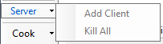
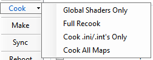
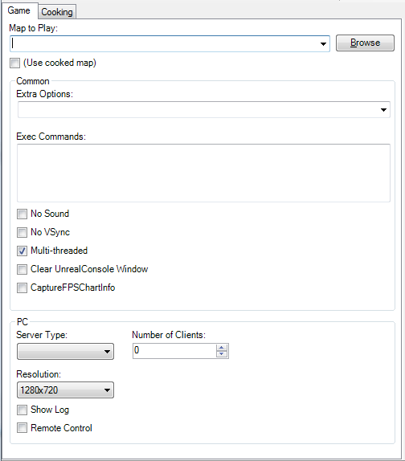

UDN
Search public documentation:
DevelopmentKitUFECH
English Translation
日本語訳
한국어
Interested in the Unreal Engine?
Visit the Unreal Technology site.
Looking for jobs and company info?
Check out the Epic games site.
Questions about support via UDN?
Contact the UDN Staff
日本語訳
한국어
Interested in the Unreal Engine?
Visit the Unreal Technology site.
Looking for jobs and company info?
Check out the Epic games site.
Questions about support via UDN?
Contact the UDN Staff
Unreal Frontend
文档概要:该文档说明了包含在UDK中的Unreal Frontend工具 文档变更记录:由John Scott更新概要
 Unreal Frontend (UFE)工具提供了一个统一的方法来执行Unreal系统中的很多常用的任务，主要包括以下任务：
Unreal Frontend (UFE)工具提供了一个统一的方法来执行Unreal系统中的很多常用的任务，主要包括以下任务： - 启动一个游戏
- 启动服务器
- 为本地服务器添加一个客户端
- 运行编辑器
- 编译脚本代码
- 烘焙数据
菜单
File > Exit – 退出UFE。 Edit > Copy to Clipboard > Single Player URL – 复制用于在当前的平台上启动一个单人游戏的URL到剪切板。 Edit > Copy to Clipboard > Multiplayer URL – 复制用于在当前的平台上启动一个多人游戏的URL到剪切板。 Edit > Copy to Clipboard > Compile Command Line – 复制将用于为当前的配置编译脚本的ＵＲＬ到剪切板。 Edit > Copy to Clipboard > Cooking Command Line – 复制用于烘焙当前游戏、平台及配置的URL到剪切板。 Edit > Clear Output Window – 清除输出窗口动作工具条(Actions Toolbar)
 Launch(启动) – 使用当前的平台及配置以单人游戏的方式启动当前的游戏。
Editor(编辑器) – 为当前的游戏及当前的配置启动编辑器。
Server(服务器) – 使用当前的平台及配置为当前的游戏启动一个服务器。
Launch(启动) – 使用当前的平台及配置以单人游戏的方式启动当前的游戏。
Editor(编辑器) – 为当前的游戏及当前的配置启动编辑器。
Server(服务器) – 使用当前的平台及配置为当前的游戏启动一个服务器。

Server(服务器) > Add Client(增加客户端) – 在当前的平台及配置上创建一个新的当前游戏的实例 来尝试连接PC上的localhost。游戏机平台不具备此功能。 Server(服务器)> Kill All(杀掉所有) – 终止所有由UFE在PC上创建的游戏实例。游戏机平台不具备此功能。 Cook(烘焙) – 在当前平台及配置下为当前的游戏烘焙数据。
Cook (烘焙)> Global Shaders Only(进全局Shaders) - 仅烘焙全局shaders. Cook(烘焙) > Full Recook(完全地重新烘焙) - 强制重新烘焙所有内容。这将删除前一次烘焙操作所产生的内容。(-full)。 Cook(烘焙) > Cook .ini/.int's Only(仅烘焙.ini/.int文件) - 如果您进改变了本地化文件和/或设置，仅烘焙.ini和.int文件将会为您节省很多时间。 (-inisonly) Make(制作) – 为当前所选游戏及烘焙/编译配置来编译脚本文件。 Package Game(打包游戏) - 这允许您指出您的游戏的文件名称或快捷方式，然后打包Epic的二进制文件及您的已烘焙内容为一个独立平台的安装程序，从而进行发布。标签
UFE的大多数功能都在界面左侧通过一些标签分开列出。 F1-F2键用于快速地在标签间切换。Game标签

Game(游戏)标签包含着控制如何使用UFE启动当前选中的游戏的选项。 Map to Play(播放的地图) – 当游戏通过 Launch 或 Server 按钮被启动时所要加载的地图。 (Use cooked map(使用以烘焙的地图)) – 如果当游戏通过 Launch 或 Server 按钮被启动时选择了这个复选框，它将会使用列在Cooking 标签的 Maps to Cook(要烘焙的地图) 文本框中的第一个地图。 Extra Options(其它选项) – 要在游戏启动时传递到游戏中的其它选项。这些选项必须由空格分隔，引擎的选项必须以a –为前缀，游戏的选系那个必须以a ?为前缀。 Exec Commands(Exec命令行) – 在游戏启动时需要执行的一系列命令。 No Sound(无声音) – 控制在游戏启动时是有有声音 (-nosound)。 No VSync – 控制在游戏启动时是否vsync (-novsync). Multi-threaded(多线程) – 控制游戏使用多线程启动还是单线程启动(-onethread)。 Clear UnrealConsole Window(清除UnrealConsole 窗口) - 控制在游戏启动时是否清除UnrealConsole的输出。 CaptureFPSChartInfo – 控制是否捕获FPS图表的一段数据(?CaptureFPSChartInfo=1)。 Number of Clients(客户端数量) – 当启动一个多人游戏时，这个既可以用于PC也可以用于游戏控制平台。它指定了将会自动连接到服务器的客户端的数量。当点击Server > Add Client时，这个值也制定了将要创建的额外客户端的数量。 Server Type(服务器类型) – 指定了当点击 Server 按钮时将创建的服务器的类型:- Listen(监听服务器) – 服务器作为一个正在进行作战比赛的玩家启动。
- Dedicated(专用服务器) – 服务器作为一个不能参加比赛的专用服务器启动。
Cooking(烘焙) 标签
 烘焙标签包含着控制数据如何进行烘焙的选项。
Maps to cook(要烘焙的地图) – 这个文本框包含着将要被烘焙的地图，多个地图之间有空格作为分界符。
Import Map List(导入地图列表) – 这个按钮允许您导入一些列的地图到 Maps to cook(要烘焙的地图) 文本框。
Languages to Cook/Sync(烘焙/同步的语言) – 用于烘焙和/或同步的语言。
Run Local Game After Cook/Sync(在烘焙/同步后运行本地游戏) – 在烘焙/同步完成后启动单人游戏。
Show Balloon After Cook/Sync(在/烘焙/同步后显示气球提示) – 当鼠标焦点不再UFE上时，控制当一个命令开关完成操作后是否显示一个气球工具提示来通知您。
Force Seek Free Recook(强制重新烘焙Seek Free包) – 强制重新烘焙所有的不用寻道的包 (-recookseekfree).
Skip Automatic Script Compilation(跳过自动脚本编辑) – 如果选择了该项，将阻止烘焙工具在运行前去确定脚本是否是最新版本。
No Loc Cooking(不进行本地化烘焙) – 不进行获得多种语言版本所需要的额外工作。
Disable package compression(禁用包压缩) – 禁用包压缩。
烘焙标签包含着控制数据如何进行烘焙的选项。
Maps to cook(要烘焙的地图) – 这个文本框包含着将要被烘焙的地图，多个地图之间有空格作为分界符。
Import Map List(导入地图列表) – 这个按钮允许您导入一些列的地图到 Maps to cook(要烘焙的地图) 文本框。
Languages to Cook/Sync(烘焙/同步的语言) – 用于烘焙和/或同步的语言。
Run Local Game After Cook/Sync(在烘焙/同步后运行本地游戏) – 在烘焙/同步完成后启动单人游戏。
Show Balloon After Cook/Sync(在/烘焙/同步后显示气球提示) – 当鼠标焦点不再UFE上时，控制当一个命令开关完成操作后是否显示一个气球工具提示来通知您。
Force Seek Free Recook(强制重新烘焙Seek Free包) – 强制重新烘焙所有的不用寻道的包 (-recookseekfree).
Skip Automatic Script Compilation(跳过自动脚本编辑) – 如果选择了该项，将阻止烘焙工具在运行前去确定脚本是否是最新版本。
No Loc Cooking(不进行本地化烘焙) – 不进行获得多种语言版本所需要的额外工作。
Disable package compression(禁用包压缩) – 禁用包压缩。